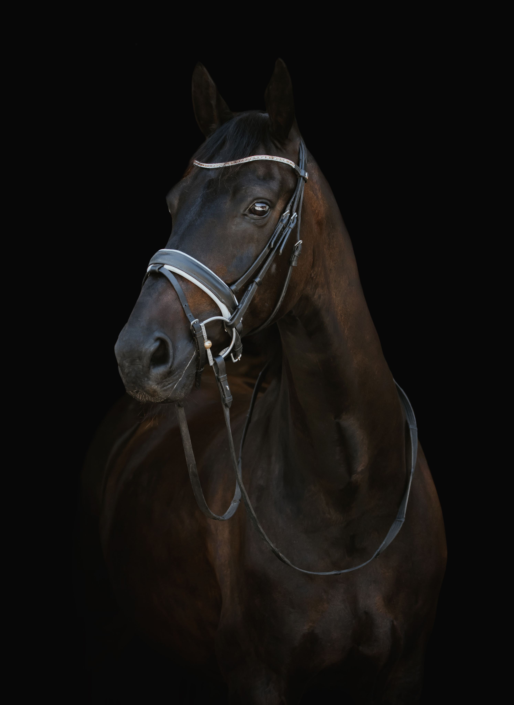

Mød skaberen bag brandet
Forbindelsen, du ikke behøver at forklare.


Maison d'Aure er skabt af Ida inspireret af det stille bånd mellem rytter og hest og ønsket om at omsætte en forbindelse imellem hest og rytter med håndlavede smykker.
Udvalgt til dig!


Oplev vores unikke kollektioner

Duval Kollektion
Düval kollektionen er en hyldest til den første hjertehest - ham, der gav dig tryghed, mod og tusind små hverdagseventyr.
Designet er roligt, afrundet og jordnært, ligesom den gamle ven i stalden, der altid stod klar ved bokslågen.
Hestesmykker til ryttere, der stadig bærer deres første hest med sig overalt.

Dineo Kollektion
Dineo kollektionen er inspireret af en særlig dressurhest med labrador-hjerte – følsom, modig og altid klar til at give lidt mere.
Kollektionen hylder de heste, der lærer os om styrke, sårbarhed og at rejse sig igen, når livet slår knuder.
Smykker til ryttere, der kender både glæden og sorgen ved at elske en hest.
Følg os på instagram